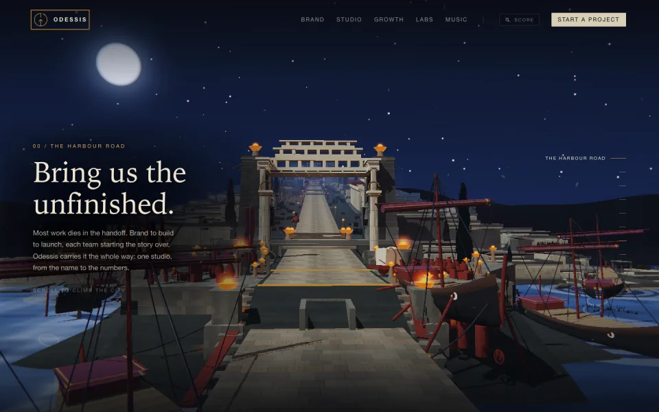
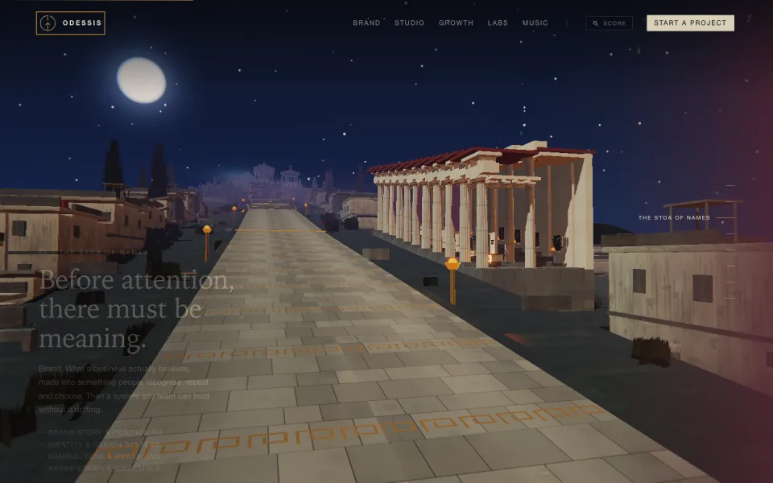
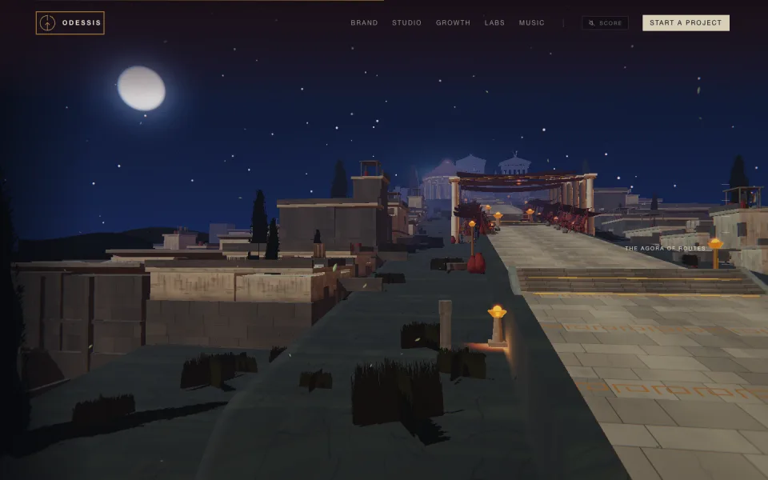
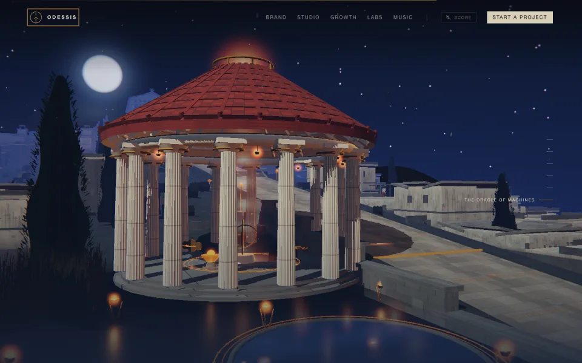
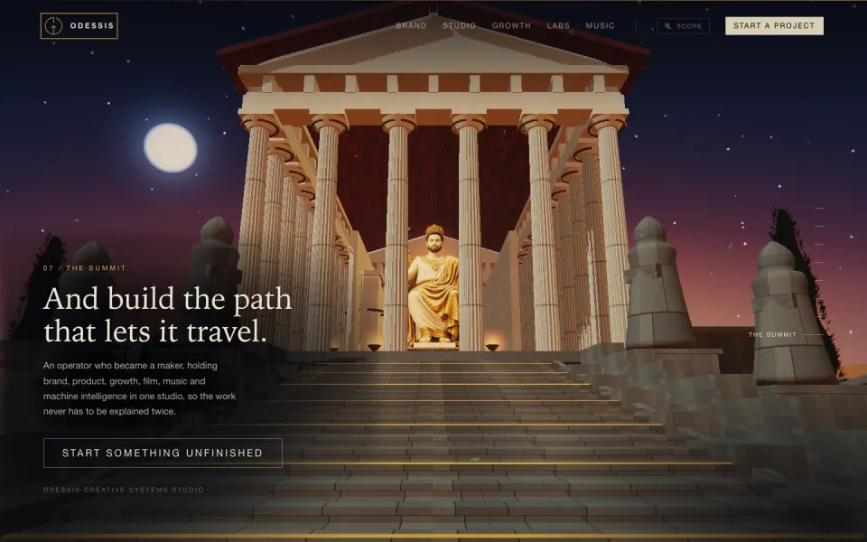

Forward control / desktop
fingerprint 1273464af6848e6b





forward 0 → 1state and pixels sampledreverse 1 → 0
Release evidence / Chromium 151
The report is the product.
Both same-build controls returned the identical fingerprint. The downloadable reports retain every state digest, screenshot digest, browser/runtime field, check and recorded diagnostic. The gallery above is an editorial sample, not a substitute for the raw evidence.
- Forward / reverse statepass
- Reduced motionpass
- No-JavaScript semanticspass
- Forced WebGL failurepass
- Horizontal overflowpass
- Page errorspass